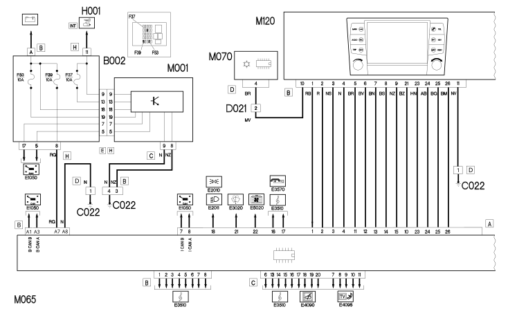
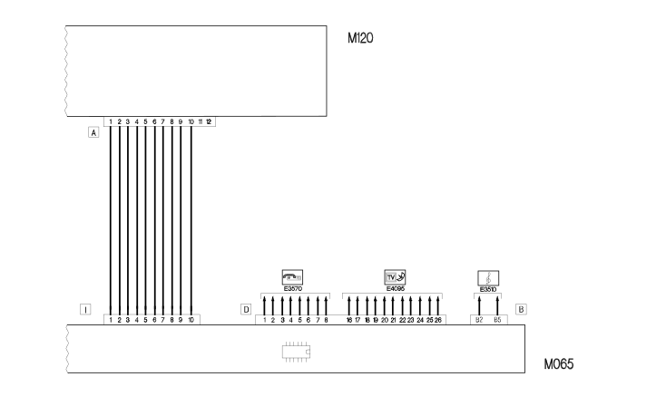

E4091 CONNECT WIRING DIAGRAM
- Path
- Electrical equipment > ELECTRICAL FUNCTIONS > E40 INSTRUMENT PANEL > E4091 CONNECT > E4091 CONNECT WIRING DIAGRAM
- Kind
- topic
- Applies to
- all engines; all production periods
- Interactive page
- https://sloeber94.github.io/elrnDB-lThss/en/#/841004959
Applies to: all engines; all production periods
Wiring Diagram

